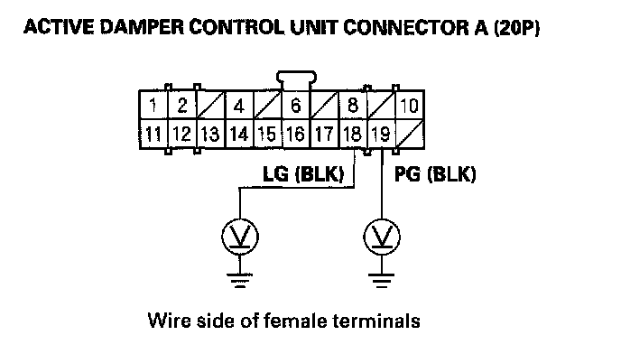

Active Damper System Indicator Does Not Go Off, and No DTCs Are Stored
Active damper system indicator does not go off, and no DTCs are storedNOTE: Check for gauges DTCs with the HDS. If gauges DTCs are stored, troubleshoot those DTCs first.
1. Check for the communication between the vehicle and the HDS.
Is there communication with all vehicle systems?
YES - Check for loose terminals in the gauge control module connector A (12P). If necessary, substitute a known-good gauge control module, then recheck. If it is OK, replace the original gauge control module.
NO - If the HDS does not communicate with all the systems of the vehicle, troubleshoot the DLC circuit. If the HDS does not communicate with only the active damper control unit, go to step 2.
2. Turn the ignition switch OFF.
3. Check the No. 20 (7.5 A) fuse in the under-dash fuse/relay box.
Is the fuse blown?
YES - Install the No. 20 (7.5 A) fuse, and recheck. If the fuse continues to blow, check for short to body ground in the wire between the No. 20 (7.5 A) fuse and the active damper control unit.
NO - Reinstall the fuse, then go to step 4.
4. Turn the ignition switch ON (II).
5. Measure voltage between body ground and active damper control unit connector A (20P) terminals No. 8, and No. 10.
Is there battery voltage?
YES - Go to step 6.
NO - Repair open in the wire between the active damper control unit and the No. 20 (7.5 A) fuse in the under-dash fuse/relay box or between the active damper control unit and the under-dash fuse/relay box.
6. Measure voltage between body ground and active damper control unit connector A (20P) terminal No. 18 and No. 19 individually.

Is there less than 0.5 V?
YES - Go to step 7.
NO - Repair open in the wire between the active damper control unit and body ground (G401 or G302).
7. Turn the ignition switch OFF.
8. Disconnect gauge control module connector A (12P).
9. Disconnect active damper control unit connector A (20P).
10. Check for continuity between the active damper control unit connector B (14P) terminals and the gauge control module connector A (12P) terminals individually (see table).
Is there continuity?
YES - Check for loose terminals in the active damper control unit connectors A (20P)/B (14P). If necessary, substitute a known-good active damper control unit, then recheck. If it is OK, replace the original active damper control unit.
NO - Repair open in the wire between the gauge control module and the active damper control unit.